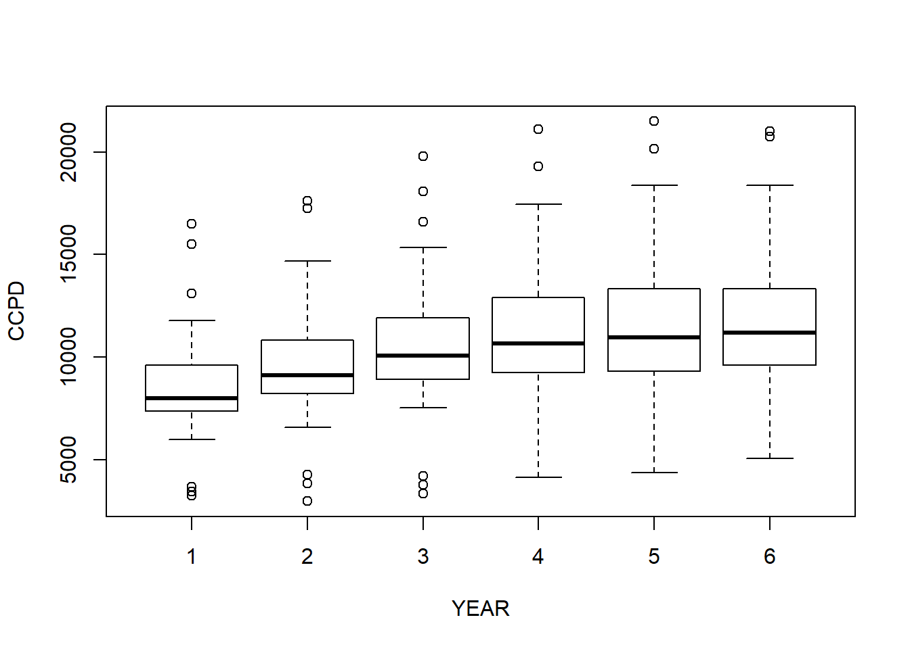
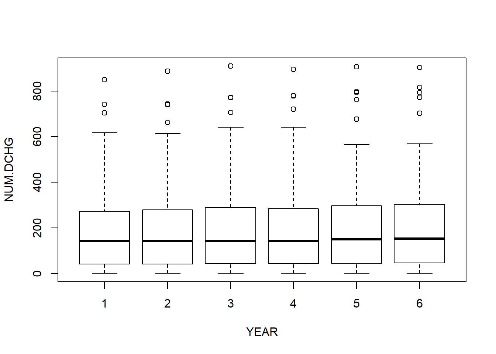
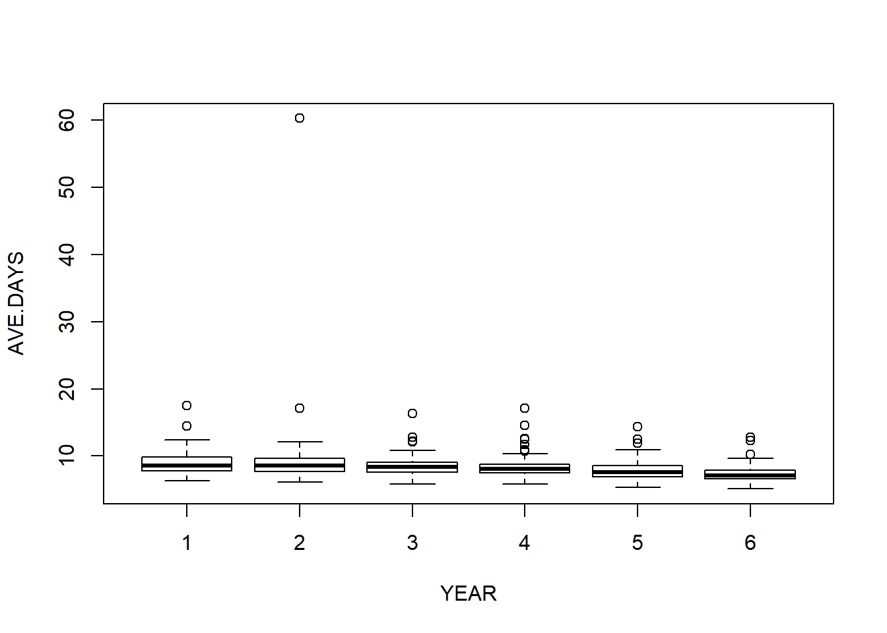
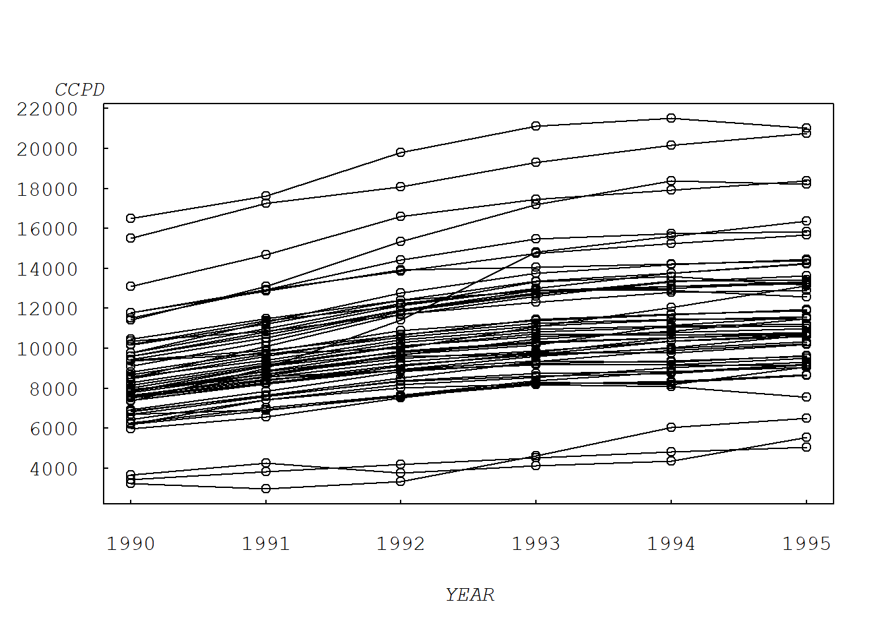
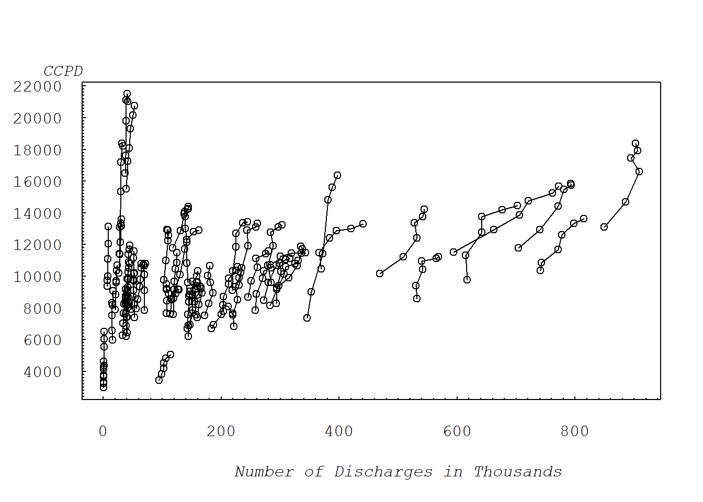
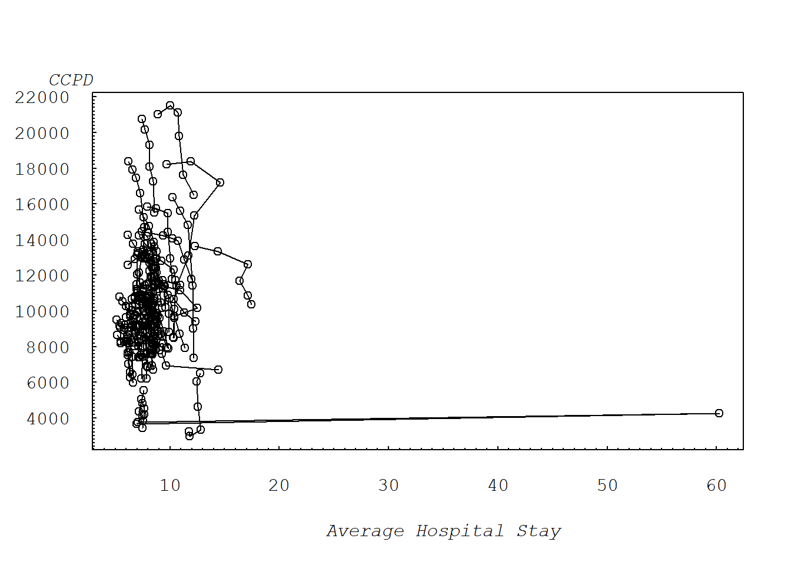
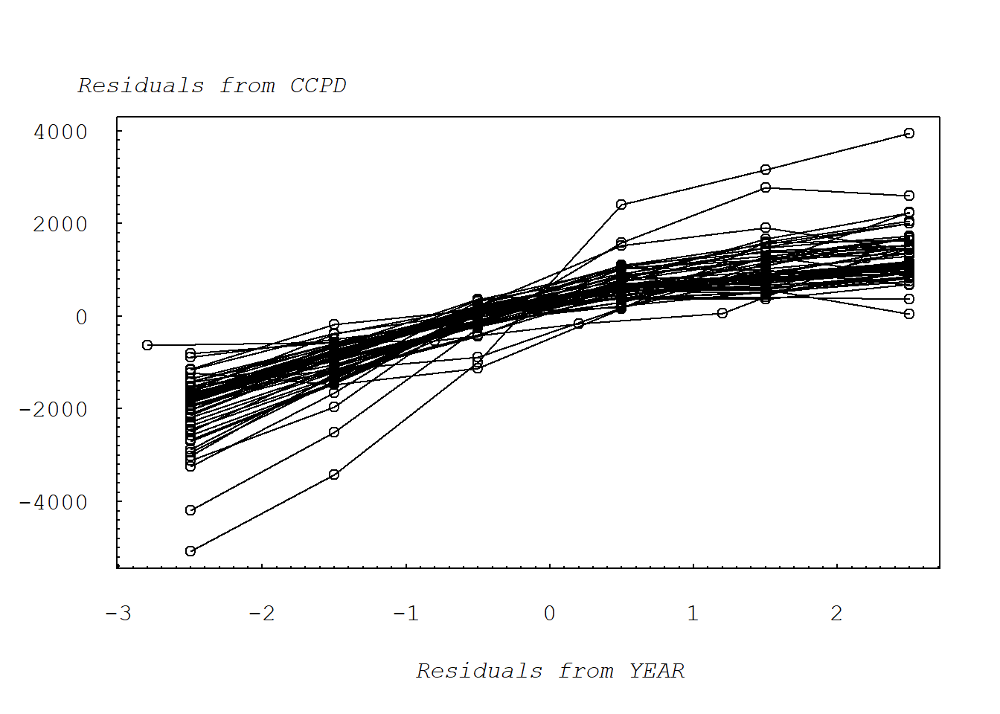
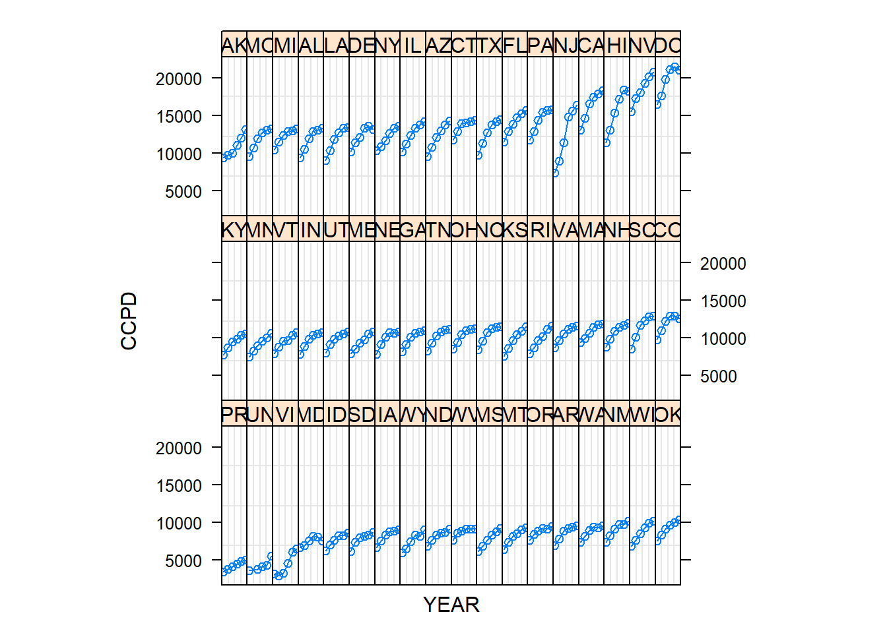

Chapter 2 Fixed-Effects Models
2.1 Import Data
We consider T=6 years, 1990-1995, of data for inpatient hospital charges that are covered by the Medicare program. The data were obtained from the Health Care Financing Administration, Bureau of Data Management and Strategy. To illustrate, in 1995 the total covered charges were $157.8 billions for twelve million discharges. For this analysis, we use state as the subject, or risk class. Thus, we consider n=54 states that include the 50 states in the Union, the District of Columbia, Virgin Islands, Puerto Rico and an unspecified “other” category.
| Variable | Description |
|---|---|
| STATE | State identifier, 1-54 |
| YEAR | Year identifier, 1-6 |
| TOT_CHG | Total hospital charges, in millions of dollars. |
| COV_CHG | Total hospital charges covered by Medicare, in millions of dollars. |
| MED_REIM | Total hospital charges reimbursed by the Medicare program, in millions of dollars. |
| TOT_D | Total number of hospitals stays, in days. |
| NUM_DSHG | Number discharged, in thousands. |
| AVE_T_D | Average hospital stay per discharge in days. |
# "\t" INDICATES SEPARATED BY TABLES ;
Medicare = read.table("TXTData/Medicare.txt", sep ="\t", quote = "",header=TRUE)
# Medicare = read.table(choose.files(), sep ="\t", quote = "",header=TRUE)Let’s have a look at the dataset. The names of variables and the first 8 rows observations.
# PROVIDES THE NAMES IN THE FILE AND LISTS THE FIRST 8 OBSERVATIONS ;
names (Medicare)[1] "STATE" "YEAR" "TOT_CHG" "COV_CHG" "MED_REIB" "TOT_D"
[7] "NUM_DCHG" "AVE_T_D" "NMSTATE" Medicare [1:8, ] STATE YEAR TOT_CHG COV_CHG MED_REIB TOT_D NUM_DCHG AVE_T_D
1 1 1 2211617271 2170240349 972752944 1932673 230015 8
2 1 2 2523987347 2468263759 1046016144 1936939 234739 8
3 1 3 2975969979 2922611694 1205791592 2016354 245027 8
4 1 4 3194595003 3149745611 1307982985 1948427 243947 8
5 1 5 3417704863 3384305357 1376211788 1926335 258384 7
6 1 6 3519375275 3492635576 1466220936 1847216 261738 7
7 2 1 64747759 62242279 42083051 51923 6636 8
8 2 2 70600503 67579913 46928596 53051 6940 8
NMSTATE
1 AL
2 AL
3 AL
4 AL
5 AL
6 AL
7 AK
8 AKThen we need to create some other variables for later use.
# CREATE OTHER VARIABLES;
# Firstly, we need change the names of existing variables.
names(Medicare)[names(Medicare)=="TOT_CHG"]="TOT.CHG";
names(Medicare)[names(Medicare)=="COV_CHG"]="COV.CHG";
names(Medicare)[names(Medicare)=="MED_REIB"]="MED.REIB";
names(Medicare)[names(Medicare)=="TOT_D"]="TOT.D";
names(Medicare)[names(Medicare)=="NUM_DCHG"]="NUM.DCHG";
names(Medicare)[names(Medicare)=="AVE_T_D"]="AVE.T.D";
Medicare$AVE.DAYS= Medicare$TOT.D/Medicare$NUM.DCHG
Medicare$CCPD=Medicare$COV.CHG/Medicare$NUM.DCHG
Medicare$NUM.DCHG=Medicare$NUM.DCHG/1000
str (Medicare)'data.frame': 324 obs. of 11 variables:
$ STATE : int 1 1 1 1 1 1 2 2 2 2 ...
$ YEAR : int 1 2 3 4 5 6 1 2 3 4 ...
$ TOT.CHG : num 2.21e+09 2.52e+09 2.98e+09 3.19e+09 3.42e+09 ...
$ COV.CHG : num 2.17e+09 2.47e+09 2.92e+09 3.15e+09 3.38e+09 ...
$ MED.REIB: num 9.73e+08 1.05e+09 1.21e+09 1.31e+09 1.38e+09 ...
$ TOT.D : int 1932673 1936939 2016354 1948427 1926335 1847216 51923 53051 55191 53329 ...
$ NUM.DCHG: num 230 235 245 244 258 ...
$ AVE.T.D : int 8 8 8 8 7 7 8 8 7 7 ...
$ NMSTATE : Factor w/ 54 levels "AK","AL","AR",..: 2 2 2 2 2 2 1 1 1 1 ...
$ AVE.DAYS: num 8.4 8.25 8.23 7.99 7.46 ...
$ CCPD : num 9435 10515 11928 12912 13098 ...Some summary statistics of CCPD, NUM.DCHG, AVE>DAYS, YEAR in each year.
library(nlme)
attach(Medicare)
# SUMMARY STATISTICS ;
dim(Medicare)[1] 324 11summary(Medicare[, c("CCPD", "NUM.DCHG", "AVE.DAYS" )]) CCPD NUM.DCHG AVE.DAYS
Min. : 2966 Min. : 0.515 Min. : 5.119
1st Qu.: 8537 1st Qu.: 42.715 1st Qu.: 7.162
Median :10073 Median :144.282 Median : 8.067
Mean :10483 Mean :210.731 Mean : 8.542
3rd Qu.:12059 3rd Qu.:282.884 3rd Qu.: 8.988
Max. :21500 Max. :908.593 Max. :60.251 gsummary(Medicare[, c("CCPD", "NUM.DCHG", "AVE.DAYS", "YEAR")], groups = YEAR, FUN=sd) CCPD NUM.DCHG AVE.DAYS YEAR
1 2466.685 202.9918 2.077437 1
2 2711.568 210.3791 7.231312 2
3 3041.274 218.9225 1.858683 3
4 3259.846 219.8253 2.112467 4
5 3345.970 226.7783 1.728882 5
6 3277.985 229.4583 1.444423 6gsummary(Medicare[, c("CCPD", "NUM.DCHG", "AVE.DAYS", "YEAR")], groups = YEAR, FUN=mean) CCPD NUM.DCHG AVE.DAYS YEAR
1 8503.168 197.7274 9.048565 1
2 9472.746 203.1443 9.823055 2
3 10443.285 210.8941 8.619240 3
4 11159.680 211.2479 8.522619 4
5 11522.826 218.8690 7.898816 5
6 11796.768 222.5059 7.342360 6gsummary(Medicare[, c("CCPD", "NUM.DCHG", "AVE.DAYS", "YEAR")], groups = YEAR, FUN=median) CCPD NUM.DCHG AVE.DAYS YEAR
1 7991.927 142.5880 8.533565 1
2 9113.473 142.6935 8.570416 2
3 10055.416 143.2515 8.363435 3
4 10666.865 143.6720 8.112863 4
5 10955.142 150.0765 7.560945 5
6 11171.080 152.6960 7.143355 6gsummary(Medicare[, c("CCPD", "NUM.DCHG", "AVE.DAYS", "YEAR")], groups = YEAR, FUN=min) CCPD NUM.DCHG AVE.DAYS YEAR
1 3228.989 0.528 6.326762 1
2 2966.117 0.515 6.143628 2
3 3324.113 0.653 5.830248 3
4 4137.776 0.969 5.830995 4
5 4354.526 1.156 5.378061 5
6 5058.371 1.059 5.118937 6gsummary(Medicare[, c("CCPD", "NUM.DCHG", "AVE.DAYS", "YEAR")], groups = YEAR, FUN=max) CCPD NUM.DCHG AVE.DAYS YEAR
1 16484.77 849.372 17.47888 1
2 17636.51 885.919 60.25108 2
3 19814.09 908.593 16.35045 3
4 21121.55 894.216 17.13484 4
5 21500.29 905.615 14.38731 5
6 21031.58 902.479 12.79622 6See the box plots of different variables in each year.
# ATTACH THE DATA SET FOR SOME PRELIMINARLY LOOKS;
attach (Medicare)The following objects are masked from Medicare (pos = 3):
AVE.DAYS, AVE.T.D, CCPD, COV.CHG, MED.REIB, NMSTATE, NUM.DCHG,
STATE, TOT.CHG, TOT.D, YEARMedicare$YEAR=Medicare$YEAR+1989
boxplot (CCPD ~ YEAR)
boxplot (NUM.DCHG ~ YEAR)
boxplot (AVE.DAYS ~ YEAR)
2.2 Example 2.2: Medicare Hospital Costs (Page 26)
2.2.1 FIGURE 2.1: CCPD vs YEAR; multiple time series plot
Figure 2.1 illustrates the multiple time-series plot. Here, we see that not only are overall claims increasing but also that claims increase for each state.
plot(CCPD ~ YEAR, data = Medicare, xaxt="n", yaxt="n", ylab="", xlab="")
for (i in Medicare$STATE) {
lines(CCPD ~ YEAR, data = subset(Medicare, STATE == i)) }
axis(2, at=seq(0, 22000, by=2000), las=1, font=10, cex=0.005, tck=0.01)
axis(1, at=seq(1990,1995, by=1), font=10, cex=0.005, tck=0.01)
mtext("CCPD", side=2, line=0, at=23000, font=12, cex=1, las=1)
mtext("YEAR", side=1, line=3, at=1992.5, font=12, cex=1)
2.2.2 FIGURE 2.2: CCPD vs NUM.DCHG
Figure 2.2 illustrates the scatter plot with symbols. This plot ofCCPD versus number ofdischarges, connecting observations over time, shows a positive overall relationship between CCPD and the number of discharges.
plot(CCPD ~ NUM.DCHG, data = Medicare, xaxt="n", yaxt="n", ylab="", xlab="")
for (i in Medicare$STATE) {
lines(CCPD ~ NUM.DCHG, data = subset(Medicare, STATE == i)) }
axis(2, at=seq(0, 22000, by=2000), las=1, font=10, cex=0.005, tck=0.01)
axis(2, at=seq(0, 22000, by=200), lab=F, tck=0.005)
axis(1, at=seq(0,1200, by=200), font=10, cex=0.005, tck=0.01)
axis(1, at=seq(0,1200, by=20), lab=F, tck=0.005)
mtext("CCPD", side=2, line=0, at=23000, font=12, cex=1, las=1)
mtext("Number of Discharges in Thousands", side=1, line=3, at=500, font=12, cex=1)
2.2.3 Figure 2.3: CCPD vs AVE.DAYS
Figure 2.3 is a scatter plot of CCPD versus average total days, connecting observations over time. This plot demonstrates the unusual nature of the second observation for the 54th state.
plot(CCPD ~ AVE.DAYS, data = Medicare, ylab="", xlab="", xaxt="n", yaxt="n")
for (i in Medicare$STATE) {
lines(CCPD ~ AVE.DAYS, data = subset(Medicare, STATE== i)) }
axis(2, at=seq(0, 22000, by=2000), las=1, font=10, cex=0.005, tck=0.01)
axis(2, at=seq(0, 22000, by=200), lab=F, tck=0.005)
axis(1, at=seq(0,70, by=10), font=10, cex=0.005, tck=0.01)
axis(1, at=seq(0,70, by=1), lab=F, tck=0.005)
mtext("CCPD", side=2, line=0, at=23000, font=12, cex=1, las=1)
mtext("Average Hospital Stay", side=1, line=3, at=35, font=12, cex=1)
2.2.4 Figure 2.4: Added-variable plot of CCPD versus year
# CREATE A CATEGORICAL VARIABLE for STATE;
Medicare$FSTATE = factor(Medicare$STATE)
# CREATE A NEW VARIABLE;
Medicare$YEAR=Medicare$YEAR-1989
# THE NEW VARIABLES YR31 WILL BE USED IN THE FINAL MODEL TO GIVE THE 31st STATE A SPECIFIC SLOPE;
Medicare$Yr31=(Medicare$STATE==31)*Medicare$YEAR
# CREATE A NEW DATA SET, REMOVING THE OUTLIER BY EXCLUDING THE 2ND OBSERVATION OF THE 54TH STATE;
Medicare2 = subset(Medicare, STATE != 54 | YEAR != 2)Figure 2.4 illustrates the basic added-variable plot. This plot portrays CCPD versus year, after excluding the second observation for the 54th state.
# BASIC ADDED VARIABLE PLOT;
# CREATE RESIDUALS;
Med1.lm = lm(CCPD ~ FSTATE, data=Medicare2)
Med2.lm = lm(YEAR ~ FSTATE, data=Medicare2)
Medicare2$rCCPD=residuals(Med1.lm)
Medicare2$rYEAR=residuals(Med2.lm)
plot(rCCPD ~ rYEAR, data=Medicare2, ylab="", xlab="", xaxt="n", yaxt="n")
for (i in Medicare2$STATE) {
lines(rCCPD ~ rYEAR, data = subset(Medicare2, STATE== i)) }
axis(2, at=seq(-6000, 4000, by=2000), las=1, font=10, cex=0.005, tck=0.01)
axis(2, at=seq(-6000, 4000, by=200), lab=F, tck=0.005)
axis(1, at=seq(-3,3, by=1), font=10, cex=0.005, tck=0.01)
axis(1, at=seq(-3,3, by=0.1), lab=F, tck=0.005)
mtext("Residuals from CCPD", side=2, line=-8, at=5000, font=12, cex=1, las=1)
mtext("Residuals from YEAR", side=1, line=3, at=0, font=12, cex=1)
2.2.5 Figure 2.5: Trellis Plot
A technique for graphical display that has recently become popular in the statistical literature is a trellis plot. This graphical technique takes its name from a trellis, which is a structure of open latticework. Figure 2.5 illustrates the use of small multiples. In each panel, the plot portrayed is identical except that it is based on a different state; this use of parallel structure allows us to demonstrate the increasing CCPD for each state.
GrpMedicare = groupedData(CCPD ~ YEAR| NMSTATE, data=Medicare2)
plot(GrpMedicare, xlab="YEAR", ylab="CCPD", scale = list(x=list(draw=FALSE)), layout=c(18,3))
2.3 One way fixed effects model using lm, for linear model
See Example 2.2: Medicare Hospital Costs.
Medicare.lm = lm(CCPD ~ NUM.DCHG + Yr31 + YEAR + AVE.DAYS + FSTATE - 1, data=Medicare2)
summary(Medicare.lm)
Call:
lm(formula = CCPD ~ NUM.DCHG + Yr31 + YEAR + AVE.DAYS + FSTATE -
1, data = Medicare2)
Residuals:
Min 1Q Median 3Q Max
-1952.54 -264.66 50.46 300.10 1638.39
Coefficients:
Estimate Std. Error t value Pr(>|t|)
NUM.DCHG 10.755 2.573 4.180 3.96e-05 ***
Yr31 1262.456 128.609 9.816 < 2e-16 ***
YEAR 710.884 26.812 26.513 < 2e-16 ***
AVE.DAYS 361.290 57.979 6.231 1.81e-09 ***
FSTATE1 3888.845 894.076 4.350 1.95e-05 ***
FSTATE2 5694.017 534.048 10.662 < 2e-16 ***
FSTATE3 5736.793 661.153 8.677 4.19e-16 ***
FSTATE4 1639.697 726.577 2.257 0.02484 *
FSTATE5 1745.883 2402.770 0.727 0.46810
FSTATE6 5519.532 639.097 8.636 5.52e-16 ***
FSTATE7 5882.663 815.649 7.212 5.77e-12 ***
FSTATE8 6319.729 625.690 10.100 < 2e-16 ***
FSTATE9 12842.939 733.122 17.518 < 2e-16 ***
FSTATE10 990.386 1962.480 0.505 0.61422
FSTATE11 1352.055 1020.337 1.325 0.18628
FSTATE12 8524.447 790.980 10.777 < 2e-16 ***
FSTATE13 2700.653 475.750 5.677 3.60e-08 ***
FSTATE14 1417.162 1526.064 0.929 0.35392
FSTATE15 1383.831 952.843 1.452 0.14760
FSTATE16 1426.408 696.791 2.047 0.04163 *
FSTATE17 3146.952 673.351 4.674 4.72e-06 ***
FSTATE18 1728.006 844.017 2.047 0.04161 *
FSTATE19 3926.979 867.993 4.524 9.16e-06 ***
FSTATE20 3242.727 639.799 5.068 7.54e-07 ***
FSTATE21 -711.562 898.191 -0.792 0.42894
FSTATE22 1079.195 1161.922 0.929 0.35384
FSTATE23 2480.023 1236.826 2.005 0.04596 *
FSTATE24 2293.256 719.640 3.187 0.00161 **
FSTATE25 957.334 712.831 1.343 0.18042
FSTATE26 3299.585 998.712 3.304 0.00109 **
FSTATE27 3003.060 494.942 6.068 4.47e-09 ***
FSTATE28 3755.028 615.706 6.099 3.77e-09 ***
FSTATE29 12615.456 598.073 21.094 < 2e-16 ***
FSTATE30 4401.868 669.931 6.571 2.64e-10 ***
FSTATE31 -2649.456 1345.138 -1.970 0.04992 *
FSTATE32 3589.638 535.271 6.706 1.20e-10 ***
FSTATE33 -4444.768 2367.411 -1.877 0.06155 .
FSTATE34 1354.039 1071.140 1.264 0.20730
FSTATE35 2683.031 552.483 4.856 2.05e-06 ***
FSTATE36 -998.648 1578.677 -0.633 0.52755
FSTATE37 2109.789 736.174 2.866 0.00449 **
FSTATE38 3082.538 552.317 5.581 5.90e-08 ***
FSTATE39 260.811 2145.305 0.122 0.90333
FSTATE40 -2006.729 631.691 -3.177 0.00167 **
FSTATE41 2978.161 744.200 4.002 8.16e-05 ***
FSTATE42 3819.468 803.495 4.754 3.28e-06 ***
FSTATE43 2398.622 532.257 4.507 9.90e-06 ***
FSTATE44 1498.689 1017.547 1.473 0.14198
FSTATE45 277.739 1831.029 0.152 0.87955
FSTATE46 4580.418 496.141 9.232 < 2e-16 ***
FSTATE47 3612.284 621.289 5.814 1.75e-08 ***
FSTATE48 -2516.614 807.777 -3.115 0.00204 **
FSTATE49 2213.600 943.221 2.347 0.01967 *
FSTATE50 2138.158 685.695 3.118 0.00202 **
FSTATE51 2101.881 677.712 3.101 0.00213 **
FSTATE52 1138.089 835.624 1.362 0.17437
FSTATE53 2784.381 471.058 5.911 1.04e-08 ***
FSTATE54 -1037.318 544.265 -1.906 0.05774 .
---
Signif. codes: 0 '***' 0.001 '**' 0.01 '*' 0.05 '.' 0.1 ' ' 1
Residual standard error: 529.5 on 265 degrees of freedom
Multiple R-squared: 0.9981, Adjusted R-squared: 0.9977
F-statistic: 2392 on 58 and 265 DF, p-value: < 2.2e-16anova(Medicare.lm)Analysis of Variance Table
Response: CCPD
Df Sum Sq Mean Sq F value Pr(>F)
NUM.DCHG 1 2.1693e+10 2.1693e+10 77387.47 < 2.2e-16 ***
Yr31 1 6.8708e+07 6.8708e+07 245.11 < 2.2e-16 ***
YEAR 1 1.1974e+10 1.1974e+10 42716.19 < 2.2e-16 ***
AVE.DAYS 1 2.6659e+09 2.6659e+09 9510.30 < 2.2e-16 ***
FSTATE 54 2.4833e+09 4.5986e+07 164.05 < 2.2e-16 ***
Residuals 265 7.4284e+07 2.8032e+05
---
Signif. codes: 0 '***' 0.001 '**' 0.01 '*' 0.05 '.' 0.1 ' ' 12.4 SECTION 2.4.1 - Analysis for the pooling test;
We can check the F-ratio by anova(Medicare.lm,Medicare3.lm). We reject the null hypothesis from the result below.
Medicare3.lm = lm(CCPD ~ NUM.DCHG+ Yr31 + YEAR + AVE.DAYS , data=Medicare2)
summary(Medicare3.lm)
Call:
lm(formula = CCPD ~ NUM.DCHG + Yr31 + YEAR + AVE.DAYS, data = Medicare2)
Residuals:
Min 1Q Median 3Q Max
-7176.7 -1255.3 -384.9 1092.4 10350.9
Coefficients:
Estimate Std. Error t value Pr(>|t|)
(Intercept) 4342.1049 873.4212 4.971 1.09e-06 ***
NUM.DCHG 4.6606 0.7241 6.436 4.51e-10 ***
Yr31 299.9270 295.8341 1.014 0.311432
YEAR 733.2750 94.1398 7.789 9.62e-14 ***
AVE.DAYS 308.4710 86.0766 3.584 0.000392 ***
---
Signif. codes: 0 '***' 0.001 '**' 0.01 '*' 0.05 '.' 0.1 ' ' 1
Residual standard error: 2732 on 318 degrees of freedom
Multiple R-squared: 0.2879, Adjusted R-squared: 0.279
F-statistic: 32.15 on 4 and 318 DF, p-value: < 2.2e-16anova(Medicare3.lm)Analysis of Variance Table
Response: CCPD
Df Sum Sq Mean Sq F value Pr(>F)
NUM.DCHG 1 463168764 463168764 62.0651 5.317e-14 ***
Yr31 1 33908652 33908652 4.5438 0.0338046 *
YEAR 1 366756374 366756374 49.1457 1.430e-11 ***
AVE.DAYS 1 95840842 95840842 12.8428 0.0003919 ***
Residuals 318 2373115933 7462629
---
Signif. codes: 0 '***' 0.001 '**' 0.01 '*' 0.05 '.' 0.1 ' ' 1anova(Medicare3.lm,Medicare.lm) # pooling testAnalysis of Variance Table
Model 1: CCPD ~ NUM.DCHG + Yr31 + YEAR + AVE.DAYS
Model 2: CCPD ~ NUM.DCHG + Yr31 + YEAR + AVE.DAYS + FSTATE - 1
Res.Df RSS Df Sum of Sq F Pr(>F)
1 318 2373115933
2 265 74284379 53 2298831554 154.73 < 2.2e-16 ***
---
Signif. codes: 0 '***' 0.001 '**' 0.01 '*' 0.05 '.' 0.1 ' ' 12.5 SECTION 2.4.2 - Correlation corresponding to the added variable plot;
As with all scatter plots, the added-variable plot can be summarized numerically through a correlation coefficient that we will denote by \(corr(e_1, e_2)\).
# SECTION 2.4.2 - CORRELATION CORRESPONDING TO THE ADDED VARIABLE PLOT;
library(boot)
cor(Medicare2$rCCPD , Medicare2$rYEAR)[1] 0.88471512.6 SECTION 2.4.5 - Testing for heteroscedasticity;
When fitting regression models to data, an important assumption is that the variability is common among all observations. This assumption of common variability is called homoscedasticity, meaning “same scatter”.
Medicare2$Resids=residuals(Medicare.lm)
Medicare2$ResidSq=Medicare2$Resids*Medicare2$Resids
MedHet.lm = lm(ResidSq ~ NUM.DCHG, data=Medicare2)
summary(MedHet.lm)
Call:
lm(formula = ResidSq ~ NUM.DCHG, data = Medicare2)
Residuals:
Min 1Q Median 3Q Max
-255383 -212155 -143167 7752 3555249
Coefficients:
Estimate Std. Error t value Pr(>|t|)
(Intercept) 261171.0 35324.5 7.393 1.25e-12 ***
NUM.DCHG -147.5 116.8 -1.264 0.207
---
Signif. codes: 0 '***' 0.001 '**' 0.01 '*' 0.05 '.' 0.1 ' ' 1
Residual standard error: 454200 on 321 degrees of freedom
Multiple R-squared: 0.004949, Adjusted R-squared: 0.001849
F-statistic: 1.597 on 1 and 321 DF, p-value: 0.2073anova(MedHet.lm)Analysis of Variance Table
Response: ResidSq
Df Sum Sq Mean Sq F value Pr(>F)
NUM.DCHG 1 3.2930e+11 3.2930e+11 1.5966 0.2073
Residuals 321 6.6208e+13 2.0625e+11 2.6.1 One way random effects model using lm, for linear model;
We will learn random effects model in Chapter 3. Here is an example.
Medicare.lme = lme(CCPD ~ NUM.DCHG, data=Medicare2, random = ~1|STATE)
summary(Medicare.lme)Linear mixed-effects model fit by REML
Data: Medicare2
AIC BIC logLik
5733.495 5748.581 -2862.747
Random effects:
Formula: ~1 | STATE
(Intercept) Residual
StdDev: 3016.201 1316.346
Fixed effects: CCPD ~ NUM.DCHG
Value Std.Error DF t-value p-value
(Intercept) 8084.128 564.3211 268 14.325404 0
NUM.DCHG 11.386 1.8044 268 6.310388 0
Correlation:
(Intr)
NUM.DCHG -0.674
Standardized Within-Group Residuals:
Min Q1 Med Q3 Max
-3.6167201 -0.6276783 0.1998388 0.6325460 2.7846480
Number of Observations: 323
Number of Groups: 54